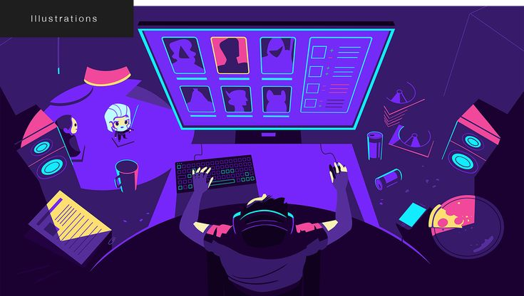

Cargando Sistema...
>_ Formando líderes en la era digital.
El egresado del CBT No. 1 domina el ecosistema digital mediante tres pilares fundamentales.
Desarrollo de aplicaciones web y móviles de alto impacto.

Gestión de infraestructura y ciberseguridad corporativa.
Mantenimiento preventivo y arquitectura de sistemas.
Tu evolución técnica paso a paso
Al concluir sus estudios, el alumno será capaz de:
Cada módulo profesional certifica una competencia específica para el campo laboral.
Ensamblado de equipos y mantenimiento preventivo.
Construcción de software con algoritmos eficientes.
Administración de datos y servidores web.
Proyecto final en entorno laboral real (Escenario real).